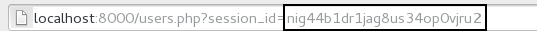

This application has been designed to teach the following:
The application is built with a number of php files, and a sqlite database. It also has a couple of scripts to facilitate a few functions. Please look around the folder to get a feel for what it has to offer.
The OWASP Foundation came online on December 1st 2001 it was established as a not-for-profit charitable organization in the United States on April 21, 2004 to ensure the ongoing availability and support for our work at OWASP. OWASP is an international organization and the OWASP Foundation supports OWASP efforts around the world. OWASP is an open community dedicated to enabling organizations to conceive, develop, acquire, operate, and maintain applications that can be trusted. All of the OWASP tools, documents, forums, and chapters are free and open to anyone interested in improving application security. We advocate approaching application security as a people, process, and technology problem because the most effective approaches to application security include improvements in all of these areas. We can be found at www.owasp.org.
OWASP is a new kind of organization. Our freedom from commercial pressures allows us to provide unbiased, practical, cost-effective information about application security. OWASP is not affiliated with any technology company, although we support the informed use of commercial security technology. Similar to many open-source software projects, OWASP produces many types of materials in a collaborative, open way. The OWASP Foundation is a not-for-profit entity that ensures the project's long-term success.
Injection can occur when the data entered by a user is trusted in the application, and the developer has not taken steps to correctly validate the data input.
A SQL injection attack consists of insertion or "injection" of a SQL query via the input data from the client to the application. A successful SQL injection exploit can read sensitive data from the database, modify database data (Insert/Update/Delete), execute administration operations on the database (such as shutdown the DBMS), recover the content of a given file present on the DBMS file system and in some cases issue commands to the operating system. SQL injection attacks are a type of injection attack, in which SQL commands are injected into data-plane input in order to effect the execution of predefined SQL commands.
SQL injection attacks allow attackers to spoof identity, tamper with existing data, cause repudiation issues such as voiding transactions or changing balances, allow the complete disclosure of all data on the system, destroy the data or make it otherwise unavailable, and become administrators of the database server.
The severity of SQL Injection attacks is limited by the attacker’s skill and imagination, and to a lesser extent, defense in depth countermeasures, such as low privilege connections to the database server and so on. In general, consider SQL Injection a high impact severity.
$usr = ($_POST['username']);
$pas = ($_POST['password']);
try
{
$results = $db->query("SELECT * FROM users WHERE username='$usr' AND password='$pas'");
}
So now we now how SQL Injection works, let's try it. This link (/users.php) will take you to a protected space, and will only allow authenticated users to enter. Try going there now without logging in.
You should have been redirected to the login page. Now let's try to login using the username: "user", and the password: "test". You should now see the protected space. Click on the logout link, and then try going back to the users page to make sure that you are completely logged out.
Let's "hack" into the application taking advantage of the fact that the login page is vulnerable to SQL Injection.
Try putting the following in the user field and leave the password blank:
x' OR 1=1; --
This works because the new sql query looks like this:
SELECT * FROM users WHERE username='x' OR 1=1; --' AND password='';
The "--" in SQL means the rest of the line is a comment. So it is basically saying, "Select all from users where username is x or 1=1". One will always equal one, so this works.
What other sql commands can you enter?
$usr = ($_POST['username']);
$pas = ($_POST['password']);
$usr_clean = sqlite_escape_string($usr);
try
{
$results = $db->query("SELECT * FROM users WHERE username='$usr_clean' AND password='$pas'");
}
What is the problem with this "fix"?
$usr = ($_POST['username']);
$pas = ($_POST['password']);
$sql = "SELECT * FROM users WHERE username=:username AND password=:password";
$stmt = $db->prepare($sql);
$stmt->bindParam(':username', $usr, PDO::PARAM_STR);
$stmt->bindParam(':password', $pas, PDO::PARAM_STR);
$found = $stmt->execute();
$results = $stmt->fetchAll();
You can test out trying to do a sql injection attack on this code, by going to login-better.php
HTTP is a stateless protocol meaning that it doesn't natively remember who a visitor is, or the settings they use. To get around this, developers created what is known as sessions. Sessions store information about the visitor, so when a user goes to another page, or returns to the website, the experience can be customized to them. A good illustration of this, is when you go to a global company and it asks you the country you are from. The next time you visit, you don't need to specify the country because the server "remembers" you. This is done through sessions.
The vulnerability in sessions is that not only will it save your settings, but it can also saves information on whether you have logged in, what your username is, and your permission settings. Making a session a virtual key.
For an attacker to succeed they need to present the server with a valid session id. This can be obtained through cookies, using statistically probability to guess an id, sniffing the url, etc...
Once the attacker has the session id, they can simply present that id to the server, and often times they will have the same access as the victim.
Here are things to look for inorder to identify Session Attacks:
I wanted to make sure you got the experience of exploiting session ids without installing any additional application. So for this app, if you notice that when you log in the Session Id is passed in the url.
To exploit this vulnerability, you can simulate a MiTM attack by copying the logged in url to another browser and using it to access the protected space.
You can also re-use the session id. Simply login with valid credentials, copy the url, then logout. Try going back to the protected space without logging in to verify that you no longer have a session. Now use the session you copied to access the protected space without logging in.